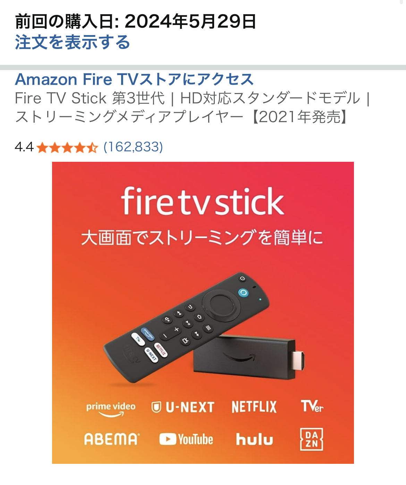

「モニターと一緒に初めて買いましたが、起動して手順通り進めるだけで問題なくセットアップやアカウントの紐付けもできます。大画面でプライムビデオ観れて満足です。」という★5評価の口コミどおり、 Fire TV Stick 4K Maxは“テレビやPCモニターを、すぐに動画視聴用ディスプレイに変えてくれる”ストリーミングデバイスという印象です。
本記事では、実際の口コミ内容と一般的な使用シーンをもとに、「レビュー」「デメリット」「比較」の3つの軸でFire TV Stick 4K Maxを整理します。 これから購入を検討している方が、メリットだけでなく注意点も把握したうえで判断できるようにまとめました。
Fire TV Stick 4K Maxの使用感レビュー【大画面でPrime Videoを楽しみたい人向け】
口コミにもあるとおり、初期セットアップは画面の案内に従って進めるだけというシンプルな流れです。 Wi-Fiのパスワード入力とAmazonアカウントのログインを済ませれば、Prime Videoをはじめとした対応サービスにすぐアクセスできます。
特に「モニターと一緒に初めて買いました」というケースでは、PC用モニター＋Fire TV Stick 4K Maxという組み合わせで、 いわゆる“テレビがない部屋”でも大画面で動画を楽しめるようになる点が大きな魅力です。 既にPrime会員であれば、追加の月額料金なしでPrime Videoの作品を大画面で視聴できるのも分かりやすいメリットと言えます。
リモコン操作もシンプルで、ホームボタンからアプリを選ぶだけの直感的なUIです。 物理ボタンで音量調整や電源操作に対応するモデルであれば、テレビリモコンを持ち替える回数も減らせます。 「難しい設定は避けたい」「とにかくすぐ観たい」という人ほど、恩恵を感じやすいデバイスです。
Fire TV Stick 4K Maxのデメリット・注意点
一方で、Fire TV Stick 4K Maxにはいくつか事前に知っておきたいデメリット・注意点もあります。 ここでは、一般的に言われやすいポイントを整理します。
まず、Wi-Fi環境に大きく依存する点です。 通信が不安定な環境では、画質が自動的に落ちたり、読み込みに時間がかかったりする場合があります。 口コミのように快適に使えているケースは、ある程度安定した回線が前提になっていると考えた方が安心です。
次に、リモコン操作に慣れるまで少し時間がかかる場合がある点です。 スマホやPCと違い、カーソルを十字キーで動かす操作になるため、検索時の文字入力などはやや手間に感じることがあります。 音声検索に対応したモデルであれば軽減できますが、静かな環境で使いたい人は、リモコン操作中心になることも想定しておくとギャップが少なくなります。
また、テレビやモニター側のHDMI端子・電源環境も確認が必要です。 古いモニターの場合、HDMI端子がなかったり、給電用のUSBポートが足りなかったりすることがあります。 その場合は別途電源アダプターや変換アダプターが必要になる可能性があるため、購入前に手持ちの機器をチェックしておくと安心です。
Fire TV Stick 4K Maxと他の視聴方法を比較
ここでは、Fire TV Stick 4K Maxと、スマホ視聴・PC視聴・スマートテレビという3つの選択肢を簡単に比較してみます。 それぞれにメリットがあるため、自分の生活スタイルに合うかどうかをイメージしながら読んでみてください。
スマホ視聴との比較
スマホ視聴は「いつでもどこでも観られる」点が強みですが、画面サイズの制約は避けられません。 一方、Fire TV Stick 4K Maxは、自宅のモニターやテレビを活用して大画面で観られるのが大きな違いです。 特に映画やドラマをじっくり楽しみたい場合、画面サイズの差は体験に直結します。
PC視聴との比較
PCでもブラウザからPrime Videoなどを視聴できますが、「作業用PCと視聴環境を分けたい」人にはFire TV Stick 4K Maxが向いています。 PCを立ち上げずに、リモコンだけで視聴を完結できるため、ソファに座ってリラックスしながら観たい人には相性が良いスタイルです。
スマートテレビとの比較
スマートテレビはテレビ単体でアプリが使えるのが魅力ですが、既にテレビやモニターを持っている場合は、 Fire TV Stick 4K Maxを追加する方がコストを抑えやすいケースもあります。 また、Fire TVシリーズのインターフェースに慣れていると、買い替え時にも操作感を揃えやすいというメリットがあります。
こんな人にFire TV Stick 4K Maxは検討する価値あり
以上を踏まえると、Fire TV Stick 4K Maxは次のような人にとって、検討する価値があるデバイスと言えます。
- 既にAmazonプライム会員で、Prime Videoを大画面で楽しみたい人
- テレビやモニターを有効活用して、動画視聴環境を手軽に整えたい人
- スマホやPCだけでなく、リモコン操作でゆっくり動画を観たい人
- スマートテレビを買い替えるほどではないが、配信サービスをまとめて使いたい人
口コミのように「起動して手順通り進めるだけでセットアップできた」という声がある一方で、 ネットワーク環境や周辺機器との相性によって体験は変わる可能性があります。 購入前には、商品ページの説明や最新のレビューもあわせて確認しておくと、より納得感のある選択につながります。
本記事の内容は、実際の口コミや一般的な使用シーンをもとにした一例です。 すべての環境で同じ結果を保証するものではありませんが、Fire TV Stick 4K Maxが自分の視聴スタイルに合うかどうかを考える際の参考になれば幸いです。